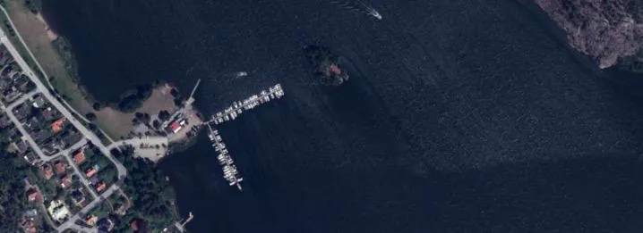
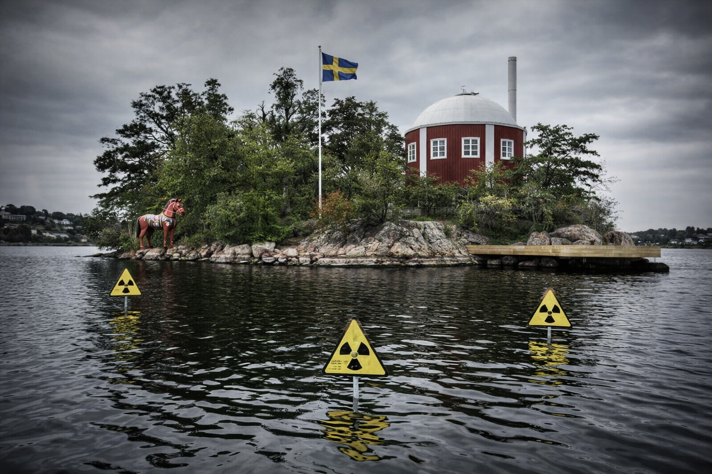
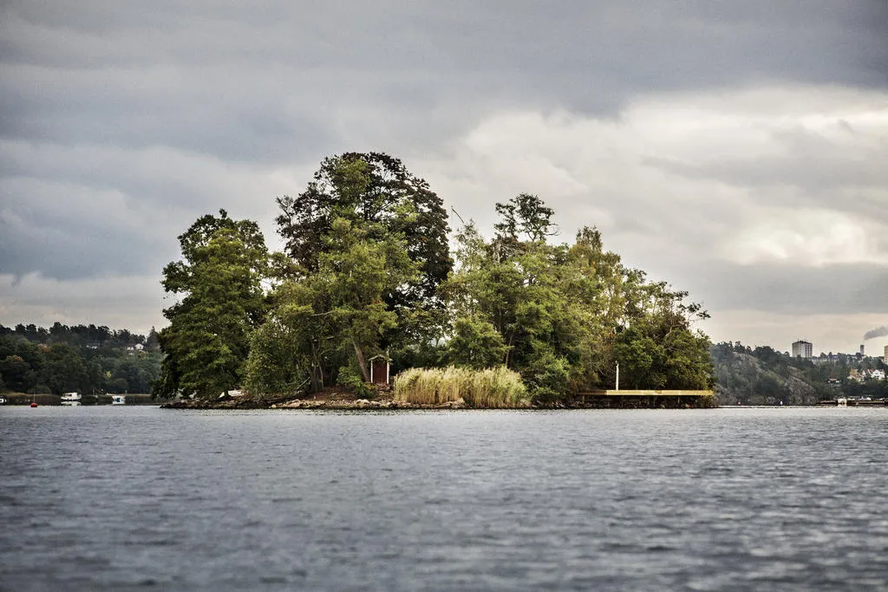

1 april 2026. Slutpriset för Jungfruholmen blev 14 350 000 kronor. Mycket pengar för de flesta men inte för den nye ägaren – Joel Jakobsson som är en av grundarna bakom fintechbolaget Trustly.
Under de drygt 40 år som förre ägaren hade Jungfruholmen hände inte mycket på ön som ligger bara 50 meter från båtbryggan vid Segeludden.
Nye ägaren vill dock göra en närmast total makeover av de 2 280 kvadratmetrarna. Inte med bar och badtunnor, utan med ett blykylt minireaktorkraftverk från det svenska kärnkraftsbolaget Blykalla.
I dag finns bara ett hus på ön, byggt 1935 och 149 kvadratmeter stort, och ett uthus på 4 kvadratmeter.
Joel Jakobsson vill bygga om uthuset till kontrollrum för reaktorn, och uppföra en 30 kvadratmeter stor reaktorbyggnad samt ett 20 kvadratmeter stort besökscentrum där grannar och allmänhet kan lära sig om kärnkraft.
Dessutom ingår en flytbrygga på 4x12 meter på öns östra sida för att ta emot bränsletransporter, en pergola, och en badtunna som värms direkt av spillvärme från reaktorn.

Vill leverera el till hela Sollentuna
Enligt de bygghandlingar som har skickats in till Sollentuna kommun planerar Jakobsson att installera en av Blykallas så kallade SEALER-reaktorer – en blykyld snabbrektor som kan leverera upp till 3 megawatt elektricitet.
– Det räcker för att försörja hela Edsviken med grön el, och det blir lite över till resten av Sollentuna också, sa Joel Jakobsson i ett sällsynt uttalande till Mitt i.
– Jag tyckte att ön behövde en USP. Alla har badtunnor nuförtiden. Men ett eget kärnkraftverk? Det har ingen.
“Alla har badtunnor nuförtiden. Men ett eget kärnkraftverk? Det har ingen.”
Men det är långt ifrån självklart att idéerna kommer att kunna förverkligas då hela området omfattas av strandskydd – och, i det här fallet, även kärnsäkerhetslagstiftning.
En ansökan om dispens handläggs just nu av avdelningen för miljö- och hälsoskydd i Sollentuna.
– Vi har handlagt många ärenden genom åren. Altaner. Bryggor. Bastur. Men en kärnreaktor? Det var en ny en, säger Katarina Tittelbach, miljöhandläggaren som har hand om ärendet.
– Strandskydd är till för att skydda växter och djur och allmänheten. Jag är inte helt säker på hur en blykyld reaktor påverkar det lokala ekosystemet. Jag måste höra med andra instanser i kommunen, och förmodligen även Strålsäkerhetsmyndigheten. Det här ligger lite utanför mitt vanliga kompetensområde, ska jag ärligt säga.

Inte omöjligt ur kulturmiljösynpunkt
Hittills har hon fått svar från kommunantikvarie Olof Svanberg, som yttrar sig då området även är k-märkt. Svanberg skriver i ett mejl att han inte ser “att de föreslagna åtgärderna är omöjliga ur kulturmiljösynpunkt, så länge reaktorkupolen hålls under trädtoppsnivå och utförs i en färg som harmoniserar med den omgivande skärgårdsmiljön. Falurött skulle vara att föredra.”
Vill ha kommunalt VA – och elnät
Nye ägaren vill också ordna kommunalt vatten och avlopp, samt anslutning till elnätet – det senare för att kunna leverera överskottsel tillbaka till fastlandet. Jungfruholmen ligger utanför Seom:s verksamhetsområde så ägaren måste själv handla upp sjöledningar och elkablar – och sådana kontakter har redan tagits.
– Vi ser egentligen inga hinder med vatten och avlopp, men elnätsanslutningen är lite speciell. Vi brukar inte ta emot el från privata öar. Det är en ny situation, meddelar Seom i ett skriftligt uttalande.
Innan eventuell dispens från strandskydd är beviljad får ingenting göras på Jungfruholmen.
– Nej, de får inte fälla ett enda träd. Och de får absolut inte starta en kärnreaktor. De måste ha dispens först, säger Katarina Tittelbach.

“Vi inväntar svar”
Enligt en granne som bor på fastlandet invid Edsviken har ett mystiskt glödande sken synts från ön nattetid.
– Det var nog bara Joel som testade julbelysningen, tror jag. Eller hoppas jag, säger grannen som vill vara anonym.
Sofia Mazzulli på firman Stylingbolaget, som har anlitats av ägaren för att hålla i projektet, förnekar emellertid att omgörningen av ön redan skulle ha påbörjats.
– Vi inväntar svar och ser vad det blir innan vi gör något. Men jag kan säga att “Styling” i Stylingbolaget inte brukar syfta på uranstavar. Det här är nytt för oss också, säger Sofia Mazzulli.
Blykalla har inte svarat på Mitt i:s frågor om huruvida en SEALER-reaktor överhuvudtaget kan placeras på en ö som är 2 280 kvadratmeter stor.
– Det blir tight, men tekniskt sett är det möjligt, sa en anonym källa inom bolaget. Det svåra är inte fysiken. Det svåra är strandskyddsdispensen.